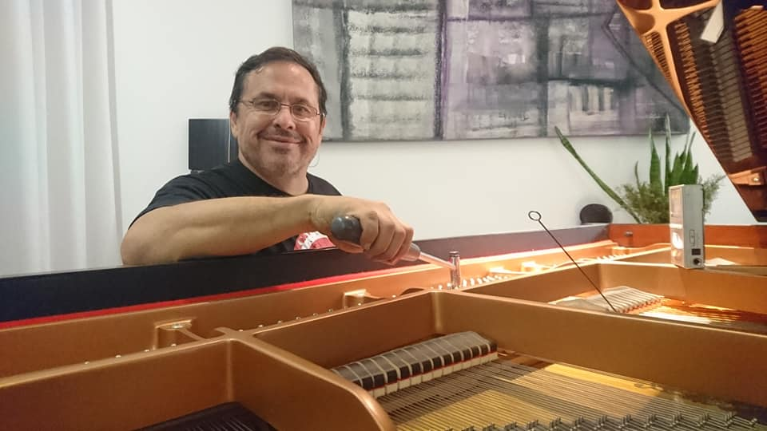
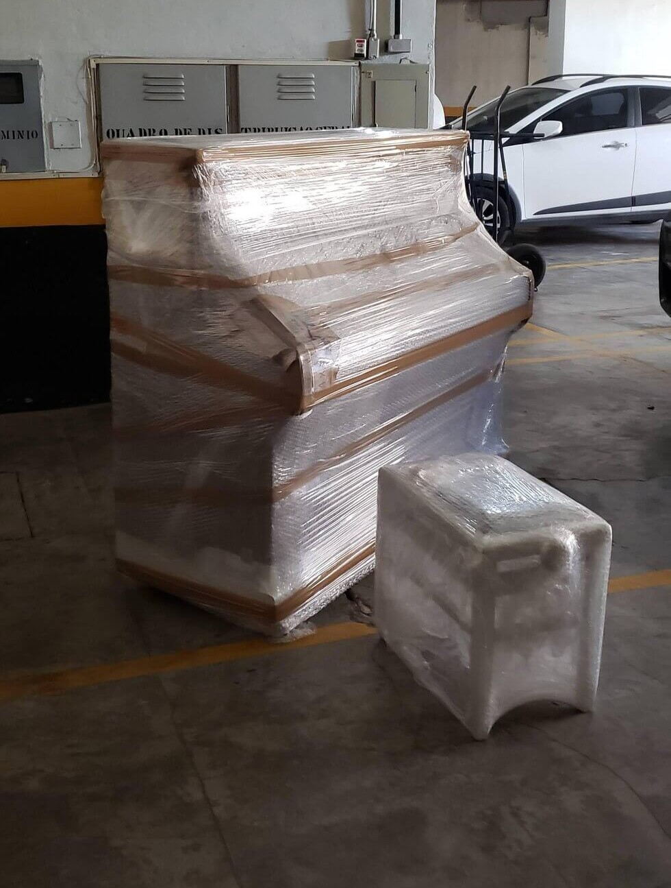

TUNE:
Here is He again tuning a great grand piano, this is one of the most difficult things about pianos they had an average of 225 wires and they receive a tension force of 200 kg this makes the wire easely change its tune at the smallest temperature change.
It is a very delicated job, and our tuner technician Lélio Puggina finish his work with an average of one or twe hours.

TRANSPORT:
Here you can have an exemple of how carefull we are with your intrument, this picture was taking after our team down six flights of stairs the piano did not sofer any kind of damage inside or autside we are very carefull .
This transpors are realized by two expecialists with a help of a strap on theirs back that give tem the mobility and confort to do the nessecery maneuvers even the piano havingan an average 250kg.

Other very commun how ever complicaded problem with pianos are the termites they are like a cancer an your instrument, if you don't realize in time maybe you allready lost your piano.
Imunization is a challenge work becaouse we need track the termites untilfind the queen, because in other way they will never really left your instrument. Througth a lot of tryings we develop our own way to cure your intrument from this cancer.
{kind=link}